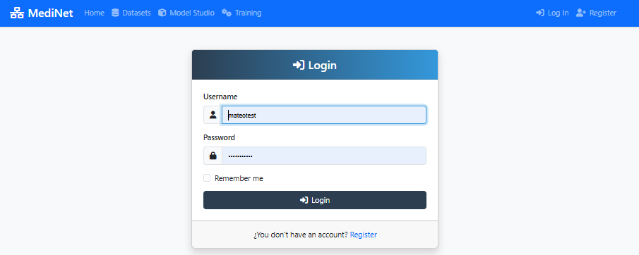

Getting Started
Registration, authentication and initial profile configuration
1
User Registration
Start by creating your account in MediNet:
- Visit the main page of MediNet
- Click on "Register" in the top right corner
- Complete the form with your professional information
- Confirm your email and complete the verification

Registration form with fields for professional and medical information
2
Login
Once registered, access the platform:
- Use your email and password to access
- The system will automatically redirect you to the dashboard
- Optional: mark "Remember me" for persistent sessions

Login screen with authentication options
3
Profile Configuration
Personalize your professional profile:
- Access "Profile" from the user menu
- Complete your professional and organizational information
- Configure your notification preferences
- Set your profile picture (optional)

Profile configuration panel with customizable options